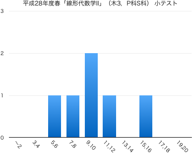
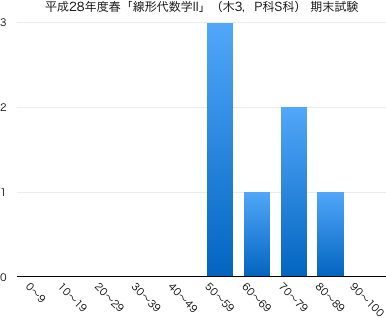

連絡事項
- 4/18：連絡事項については 日本工大サポータル の掲示板をメインに使っていきます．定期的に確認するようにしてください．
- 4/7：このページを公開しました．
-
Twitterでも，授業に関する情報を発信していきます（ハッシュタグは #16Sla2PS ）．質問，意見などのリプライを歓迎します．
授業の目的
ベクトルや行列を扱う線形代数学は抽象的であるがゆえに、その概念や技法は数学はもちろんのこと、工学のさまざまな分野でも応用されている。 線形代数学の考え方を身につけるために、行列式、1次変換、固有値・固有ベクトルについて学習する。行列式の性質を利用した計算技法を身につけるとともに、行列の幾何学的側面も理解する。
達成目標
- 行列式の定義を理解し、説明できる。
- 行列式の性質を利用した演算ができる。
- 逆行列と行列式の関係を理解し、それを利用して逆行列を求めることができる。
- 1次変換の定義を理解し、1次変換を表わす行列を求めることができる。
- 固有値・固有ベクトルの定義を理解し、それを求めることができる。
- 行列の対角化の意味や目的を理解し、対称行列の対角化を行うことができる。
- 行列の対角化を2次形式・2次曲線へ応用することができる。
科目の位置づけ
-
線形代数I → 線形代数II
- この科目では、線形代数学の基礎として、行列式の性質を利用した計算技法や固有値・固有ベクトルを取り扱う。また、先行科目である「線形代数学I」では、線形代数学の導入として、行列や行列式について学習する。
- 「線形代数学I」と併せて履修することにより、線形代数学の基礎知識を習得することができる（「線形代数学I」を履修しておくことが望ましい）。
- 工学集中コースの学生を対象にした科目であり、これまでの学習履歴に応じた問題演習を実施する。
これまでの授業と今後の予定
| 第1回 |
4月 |
7日（木） |
ガイダンス
行列式 第3章 §1.1 |
| 第2回 |
|
14日（木） |
行列式の基本性質 第3章 §1.2
課題：p.77 問2, p.81 問5 |
| 第3回 |
|
21日（木） |
行列式の展開 第3章 §2.1
課題：p.86 問3, p.91 問1 |
| 第4回 |
|
28日（木） |
高次の行列式 第3章 §2.2
課題：p.92 問4, p.94 演習問題2 7(2)(4) |
| 第5回 |
5月 |
12日（木） |
逆行列 第4章 §2.2(p.133-137)
課題：p.137 問11(3)（①余因子行列，②行列式，③逆行列を求めよ） |
| 第6回 |
|
19日（木） |
1次変換 第5章 §1.1
課題：p.143 問3, 問4, p.144 問5, p.145 問6 |
| 第7回 |
|
26日（木） |
回転行列 第5章 §1.2
課題：p.147 問1, 2, p.148 問3 |
| 第8回 |
6月 |
2日（木） |
直交行列 第5章 §1.2 , 1次変換の合成と逆変換 第5章 §1.3
課題：p.152 問3, p.153 問4 |
| 第9回 |
|
7日（火） |
小テスト【補講：2限, 2-375】（問題 | 解答 | 得点分布） |
| 第10回 |
|
9日（木） |
固有値・固有ベクトルの定義，固有値の求め方 第5章 §2.1
課題：p.161 問4 |
| 第11回 |
|
16日（木） |
固有ベクトルの求め方 第5章 §2.1
課題：p.162 問7, 8 |
| 第12回 |
|
23日（木） |
行列の対角化 第5章 §2.2
課題：p.162 問7（対角化せよ）, 追加問題2題（対角化可能か判定せよ） |
| 第13回 |
|
30日（木） |
対称行列の対角化 第5章 §2.2
課題：p.166 問1（3つの中から1つ選び，$^tPP=E$と，$^tPAP$が対角行列になることも確かめよ） |
| 第14回 |
7月 |
7日（木） |
2次形式の標準化 第5章 §2.3 |
|
|
14日（木） |
出張のため休講 |
|
|
18日（月） |
補講日（海の日） |
|
|
28日（木） |
期末試験（問題 | 解答 | 得点分布） |
教科書・参考文献について
- 矢野健太郎・石原繁編 『線形代数』 裳華房 » リンク
- 矢野健太郎・石原繁編『問題集 線形代数』裳華房 » リンク
評価について
- 期末試験80%，小テスト・演習課題など20%の割合で評価する．
- 毎回の授業で問題演習を実施する．手順は以下；
- 教科書等の問題を指定し，指定の答案用紙に解答して提出してもらいます．指定の用紙でしか受け付けません（記入例）．
- 解答後は必ず答え合わせをして，正しくない場合は途中式のどこが間違えているか探して訂正してください（正答をただ書き写すことではありません）．
- 授業時間内に終わらない場合は，次回の授業の前々日（ただし土日を除く）の17:00までに私に直接手渡すか，研究室のドアの封筒に提出してもらいます．提出期限が過ぎた答案は一切受け取りません．
- 1回の提出につき1点を加点します（合計点数は最大10点）．
ただし，不完全な答案（解答されていない問題がある，答え合わせをしていない，誤答が正されていない，等々の不備）は加点しません．
- 中間期に小テスト（ミニ中間試験）を実施する（10点）．
- 期末試験を実施する（100点満点）．
- $\min\{10,$(課題提出回数)$\}+$(中間小テストの点数)$+$(期末試験の点数)$\times 0.8\geqq 60$ で合格とする．
その他
- 平成28年度春学期のオフィスアワーは月3・火昼休み・水2・木2です．
-
授業に対する基本的な考え方にも目を通しておいてください．
- 授業の欠席について
- 出席点というものがないので，休んだことの届け出は基本的にしなくて結構です．友人にノートを写させてもらうなどの対処を各自行ってください（課題の有無も確認してください）．
- 休んだ回の課題を提出する意思があるならば，メール等で連絡の上，答案用紙を受け取りに来てください（またはここからダウンロードして印刷）．レポート用紙やルーズリーフでの提出は原則不可です．
- 病欠等で数日休んでしまった場合は，課題の提出期限を猶予します．その際は，答案用紙を受け取る際に欠席届け等を見せてください．
試験の得点分布と評価など
- 小テスト：問題と解答（平均点：10点）

- 期末試験：問題と解答（平均点 63.7点）
|  |
| 履修者 | 9 |
| 受験者 | 7 |
| AA | 0 |
| A | 1 |
| B | 3 |
| C | 1 |
| D | 2 |
| 未受験 | 2 |
| 単位修得者 | 5 |
| 単位修得率 | 71.4% |
|